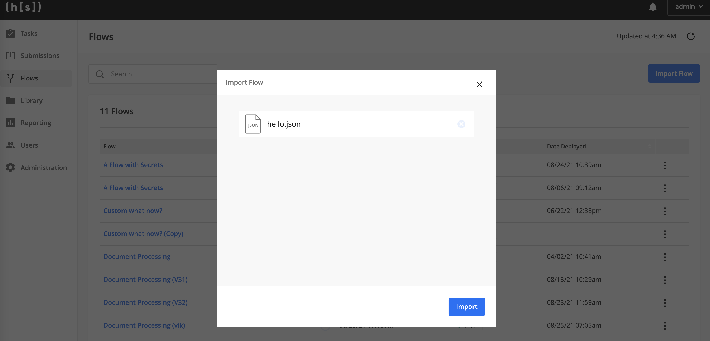

Tutorial
This tutorial will walk you through building and deploying a flow, as well as best practices for testing and debugging flows. While this tutorial uses a prepackaged example flow, these same steps should be used for developing flows specific to your business needs.
After completing this tutorial, you will:
Have a local environment with the
flows-sdklibrary installedPackage an example “IDP Starter” flow into an artifact
Import that artifact into the Hyperscience Platform
Be able to test and debug your flow
The provided “IDP Starter Example” is a basic approach to extracting text from documents. It’s a good starting point for adding process logic, data validation, data formatting, etc. specific to your business’s document extaction process.
Prerequisites
Python 3.7+
Unix shell or similar terminal
Building & Deploying
Create a virtual environment and source it.
python3 -m venv venv source venv/bin/activateInstall the
flows_sdkPython package. Contact your CX representative to receive the.whlpackage. The command below should reflect the local path of your package.pip install ~/Downloads/flows_sdk/v0.5.1/flows_sdk-0.5.1-py3.whl
Download the IDP Starter Example package, which includes:
flow.pyfile. This is the Python file, built using the Flows SDK, that defines all of the logic for IDP Starter Example flowrelease.zip, which includes a layout for processing W-9 forms. Because W-9s are a structured document it is not necessary to train any models. To learn more about releases, visit our (non-technical) user guideform-w9-blank.pdf, a blank Form W-9 used to build the layoutform-w9-sample.png, a W-9 form filled out with handwriting. This image can be submitted to test your flow.
Package
flow.pyto a.jsonfile. The Hyperscience Platform only accepts.jsonformatted files; thejsonfile may have any name.python flow.py > idp_starter_flow.json
Upload the produced
idp_starter_flow.jsonto a Hyperscience instance by going tohttps://{hyperscience-url}/flowsand clicking Import Flow.
If everything went as expected, you should be redirected to the Flow Studio - you’ve successfully uploaded your first flow to the Hyperscience Platform!

Testing & Debugging
The Hyperscience Platform includes tools to help you test and debug your flows. Continuing with the above example, we’ll show you how to submit documents to your new IDP Starter Flow by using the additional materials provided in the package.
Set your flow’s status to “Live.” Documents can only be submitted to “Live” flows.

Flows need an associated “Release” to process documents. Go to
https://{hyperscience-url}/layouts/releasesand click Add Release. Select Upload Existing and choose therelease.zipincluded in the IDP Starter Example package. After a moment you should see the release uploaded to the Hyperscience Platform.
Assign this release to your IDP Starter Flow by clicking into the release’s page and then clicking Assign to Flow. You’re now ready to test your flow by submitting documents!
Go to
https://{hyperscience-url}/submissionsand click Create Submission. Upload theform-w9-sample.pngsample document. Finally, select IDP Starter Flow as the flow to submit to. You should see that the submission was created - it may take a few minutes to process.Now we can use our testing and debugging tools to better understand how your flow processed those documents. Click on the completed submission’s ID, then click Actions and select View Flow Execution. If you used the provided IDP Starter Flow and sample document, you should see that the document processed without error.

The Flow Execution page has the following sections:
 Overview: The left-hand sidebar shows metadata for the submission.
Overview: The left-hand sidebar shows metadata for the submission.
 Flow Run diagram: The upper-right panel shows a diagram of the flow. The processing status for an individual block is shown under the block, along with the time the block completed or failed processing (if applicable). If the block has no status underneath it, it has not processed the submission yet. Clicking on a block reveals its input, output, and logs in the Block Details panel below.
Flow Run diagram: The upper-right panel shows a diagram of the flow. The processing status for an individual block is shown under the block, along with the time the block completed or failed processing (if applicable). If the block has no status underneath it, it has not processed the submission yet. Clicking on a block reveals its input, output, and logs in the Block Details panel below.
Block Details: The Block Details panel has the following tabs:
Input - Shows the input JSON arguments that the block used for processing.
Output - Shows the output JSON that the block produced as a result of processing (if applicable). Note that the Output JSON for the final block in a completed submission is not the same as the JSON output for the entire submission.
Logs - If the block failed to process the submission, shows error information for the block during processing.
You can copy any of the data shown in the Block Details panel by clicking Copy in the upper-right corner of the panel.